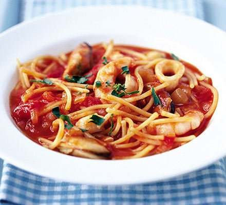

Welcome to Recetas de mariscos
Recetas de Pescados y Mariscos
2021.06.23 22:05es Sugerencias ES - Español EN - English También te puede interesar Publicidad Subir una receta Regístrate Descarga la APP kiwilimón® ©2021 Enlaces útiles Blog Recetas Tips Temporadas Quizzes Mapa del Sitio La Compañía Aviso de Privacidad Políticas de Uso del Sitio Web Anúnciate Contacto
